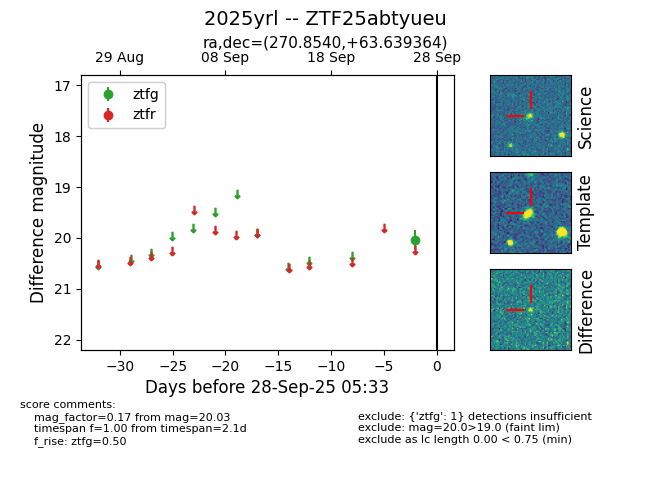

FINK: ZTF25abtyueu
Lasair: ZTF25abtyueu
ALeRCE: ZTF25abtyueu
TNS: 2025yrl
YSE: 2025yrl
ZTF25abtyueu (ztf,fink)
2025yrl (tns,yse)
equatorial (ra, dec) = (270.8540,+63.63936)
galactic (l, b) = (93.0334,+29.39100)

last ztfg=20.03
1 ztfg detections